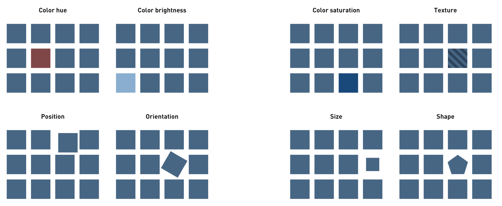

Visualisation

The Promise of Data Visualization:
- Bypass language centers, go direct to the visual cortex
- Leverage ability to recognize patterns, visual sense-making
- Animation, interaction & live data processing readily possible
Excellence in statistical graphics consists of complex ideas communicated with clarity, precision, and efficiency. -- Edward Tufte
Roles of visualisation:
Making sense of new information:
- Data that reveals previously unknown insights into patterns of life
- Visualization as a way to "throw things on the wall" and examine
- Things that used to be unknown, unknowable, or impractical to know
- Less about visualization than the data
The Familiar Through a New Lens:
- Innovations in graphic display can change how we experience an idea
- Less about data than the visualization
- "Now I see it"
- Telling an explanatory story
Environment for Exploration:
- Tool for individual or collective exploration
- Can show same data in multiple dimensions, like time/space
- Search, filter, drill down to details
- Ideally, mark and share discoveries within the tool
Examples
The Ben Fry data visualization process
In the first chapter of the Visualizing Data book, Ben Fry sets up the Data Visualization process as a series of steps:
(prepare data)
- Acquire (discovery)
Obtain the data, whether from a file on a disk or a source over a network.
- Clean, parse & filter ("munging")
Provide some structure for the data's meaning, and order it into categories. Remove all but the data of interest.
- Mine (analysis)
Apply methods from statistics or data mining as a way to discern patterns or place the data in mathematical context.
(visualise)
- Represent
Choose a basic visual model, such as a bar graph, list, or tree.
- Refine
Improve the basic representation to make it clearer and more visually engaging.
- Interact
Add methods for manipulating the data or controlling what features are visible.
(publish)
The Data
Acquire
Original research data; as spreadsheets/databases or digitized media.
Downloadable public data, archives.
Scraping tools (e.g. junar, outwit)
Combine / contextualize / mash-up
Clean, parse & filter
Clean and great data is essential for good visualisations. Good data is easily machine-readable, with semantic notes easily human-readable. Data is normalized, gaps are meaningfully handled, and noise reduced.
Normalization, Format Conversion:
- Remove everything but headers from tabular data (e.g. excel files), or copy the table of interest into a new sheet. Make sure the headers make sense. Export as CSV/TSV, json, XML etc. See Mr Data Converter
- Fully separate annotations from raw data.
- Remove specialised numeric formatting and normalize/make absolute where possible. E.g. 1000 is better than 1,000, 0.5 is better than 50%, etc.
- Convert to international standards (dates, locations, temperatures etc.) when possible.
- Fill in gaps with appropriate markers, rather than leaving them nil/null/undefined.
- Order data by the categories you need
- Remove all but data of interest
Combine multiple data sets into meaningful structure
See OpenRefine
Mine / Analysis
Apply methods from statistics or data mining as a way to discern patterns or place the data in mathematical context.
Google Sheets (or Excel) is one way of applying basic statistical analysis.
Again, combination with distinct data sets / sources / and especially APIs can be a rich way to further analysis. E.g. natural language processing APIs.
Note: Correlation is not causation. A wonderful example of spurious correlations.
The visualisation
Represent: Choose the right chart for your data

Before thinking about how the visualization should look, the data must first be understood. The first step in creating a data visualization is to examine the data. Basic questions that need to be answered are:
- What is the data?
- What are the relationships between the variables?
- How is the data organized?
- What needs to be communicated?

There are many advantages to using standard data visualisation chart patterns; they are proven to work effectively, and are familiar. But many data sets have unique characteristics which will force you to come up with new ways of communicating the data in the most effective and powerful way possible, or at least combine more than one representation to provide all the perspectives necessary to the story.
Refine: revealing the data
It is not only the type of visualisation pattern chosen - but also the design of the individual elements that play an important role in communicating information to others.
Graphical perception fundamentals
Data presented visually must be decoded into useful information by users. Preattentive variables communicate something about the design before the user pays conscious attention to it; i.e. they communicate more directly than numbers and text. These include:

What people are able to decode most accurately, in order, is:
- Position along a common scale e.g. scatter plot
- Position on identical but nonaligned scales e.g. multiple scatter plots
- Length e.g. bar chart
- Angle & Slope (tie) e.g. pie chart
- Area e.g. bubbles
- Volume, density, and color saturation (tie) e.g. heatmap
- Color hue e.g. newsmap
Tufte guidelines
Edward Tufte is the expert whose work has probably contributed most significantly to designing effective data presentations. According to his checklist, all data visualisations should:
- Show the data
- Be accurate (don’t distort the data)
- Make large data sets coherent
- Serve a clear purpose
- Reveal the data at different levels (overview versus detailed)
- Encourage the viewer to compare different pieces of data
Here are Tufte's principles of graphical integrity:
- The representation of numbers, as physically measured on the surface of the graph itself, should be directly proportional to the numerical quantities represented
- Clear, detailed and thorough labeling should be used to defeat graphical distortion and ambiguity. Write out explanations of the data on the graph itself. Label important events in the data.
- Show data variation, not design variation.
- In time-series displays of money, deflated and standardized units of monetary measurement are nearly always better than nominal units.
- The number of information carrying (variable) dimensions depicted should not exceed the number of dimensions in the data.
The Data-Ink ratio is a concept introduced by Edward Tufte to emphasize his no.1 checklist item: "Above all else, show the data". The data-ink ratio is the proportion of ink that is used to present actual data compared to the total amount of ink (or pixels) used in the entire display. It is another way of saying "avoid chart-junk".
A large share of ink on a graphic should present data-information, the ink changing as the data change. Data-ink is the non-erasable core of a graphic, the non-redundant ink arranged in response to variation in the numbers represented.
Again, a similar ratio can be applied to animation; think of 'movement-ink' being used to animate objects. How much of the movement is presenting actual data, in relation to movement that is not. Perhaps it can be quantified in terms of forces, for example.
Animation
The above refers to static visualizations; animated visualizations introduce new perceptual features and pre-attentive variables. But animated visualization is still a new and active research area; there is little consensus on what makes for a good animation.
Can we learn from the barrage of long-used animation techniques from cartooning?
- Moving items along arcs implies a more natural motion; motion along a straight line seems to have intent.
- Ease-in, ease-out: animations start slowly to emphasize direction, accelerate through the middle, and slow down again at the end.
- Complex acts are staged to draw attention to individual parts one at a time.
- Squash and stretch, distorts objects during movement to draw the eye toward the direction of motion
- Before objects begin moving, they anticipate their upcoming motion; they conclude with a follow-through.
Cartooning endows drawn shapes with the 'illusion of life' through causality, agency and ultimately emotion is central to cartooning. But this can be a negative for visualisation: animation often makes us ascribe agency and causality where none really exists.
As early as 1946, the Belgian psychologist Albert Michotte noted the “perception of causality” (Michotte 1963). It is easy to believe that the movement in an animation shows intent: that this point is chasing another across the screen (rather than moving in an equivalent trajectory one second behind it), that this ball hit another (rather than “this dot stopped at point A, and this other dot moved from A to B”), and so on.
Animation as explanation:
Short animations are one of the best tools out there for explaining ideas. By adding time to the design 'canvas', one becomes more a director of an explanation, not just a designer of information. Animation can form an argument, explain a proposition, or show cause and effect.
Such animations require an understanding of pacing, sequencing, structure and rhythm. It requires that you think through the organizational structure of an explanation, both in hierarchy and flow. But it is not a good solution if you need to see a lot of data at once to compare and connect relationships.
Animation can help engage users (nothing can capture the attention of the human visual system like motion), but without care can be a detriment to comprehension. There is also "animation junk"...
Animations can help a viewer work through the logic behind an idea by showing the intermediate steps and transitions. Staging animations -- making sure one thing happens at a time -- can aid legibility. When there are many changes, it becomes more difficult to follow.
The Gestalt perceptual principle of common fate states that viewers will group large numbers of objects together, labeling them all as a group, if they are traveling in the same direction and at the same speed. Individual objects that take their own trajecto- ries will be seen as isolates, and will visually stand out. If all the items move in different directions, however, observers have far more difficulty following them. Perception researchers have shown that viewers have difficulty tracking more than four or five objects independently—the eye gives up, tracking only a few objects and labeling other movement as noise.
Building (or unbuilding) a visualisation before the viewer's eyes can help them to understand the primary and secondary components. It explains the data through a construction or deconstruction of the layers of a diagram.
Animations can change the view, or surface (e.g. scaling), or filter & re-order data, to convey a specific narrative.
Animation can show how data collected over time changes.
- Motion allows us to follow identities between different frames, but it should be meaningful.
- Do animated transitions between data points lie more than line graphs between data points? It is important to preserve the invariant mapping (the meaning of axes) and the congruence of marks to data through animation (so e.g. a bar in a chart does not change what category it represents). Squashing & stretching etc. certainly break this rule.
Animation is also used to evoke data: icons may move in a way that indicates their category (especially for mood affects, but also flow lines).
Interact
When we allow the user to interact with the data, it is not only about how the data is displayed, but also about how it behaves, that creates meaning.
Animation as exploration: User studies have shown that animation is often ineffective at transferring knowledge, but can be more effective when knowledge is constructed, i.e. in combination with interaction. This is perhaps because animation alone actually takes control of attention away from you, whereas interaction gives you more.
User interactions are broadly categorized as:
- Selecting and filtering (what data is displayed -- helps users find data relevant to what they are looking for)
- Arrangement and navigation (how data is displayed -- helps users find new meaning in the data)
When interactive control of selecting, filtering, arranging and navigation provides immediate feedback, it shares the data visualization process with the user, and becomes a full-fledged tool for discovering new meaning and relationships in the data.
D3.js
D3.js is a JavaScript library for manipulating documents based on data.
To get the main D3.js JavaScript file go to the D3.js website and download the latest version d3.v2.min.js to your project folder, and add it to your HTML head like so:
<head>
<script type="text/javascript" src="d3.v3.min.js"></script>
</head>
Or, you can link to the host directly:
<head>
<script src="http://d3js.org/d3.v3.min.js" charset="utf-8"></script>
</head>
D3 allows you to bind arbitrary data to a Document Object Model (DOM), and then apply data-driven transformations to the document. For example, you can use D3 to generate an HTML table from an array of numbers. Or, use the same data to create an interactive SVG bar chart with smooth transitions and interaction.
D3 does this by means of a query/attribute system very similar to jQuery. E.g., to change all paragraph text to be white:
d3.selectAll("p").style("color", "white");
Yet styles, attributes, and other properties can be specified as functions of data in D3, not just simple constants. For example, to alternate shades of gray for even and odd nodes:
d3.selectAll("p").style("color", function(d, i) {
return i % 2 ? "#fff" : "#eee";
});
Despite their apparent simplicity, these functions can be surprisingly powerful, and many useful geometric (and even geographic) patterns are provided.
Join to data
Computed properties often refer to bound data. Data is specified as an array of values, and each value is passed as the first argument (d) to selection functions.
d3.selectAll("p")
.data([4, 8, 15, 16, 23, 42])
.style("font-size", function(d) { return d + "px"; });
(The strange dot syntax is called "chaining": when a function returns an object, we can call methods on that object in turn.)
The data() method maps each element of the array to each DOM node in the selection (fully explained here). You can actually see that in the console DOM view as the __data__ member of the DOM element. Once the data has been bound to the document, you can omit the data operator. For a much more detailed explanation, see here.
Don't worry about matching the array length: using D3’s enter(), you can create new nodes for incoming data (and use exit() to remove nodes):
d3.select("body").selectAll("p")
.data([4, 8, 15, 16, 23, 42])
.enter()
.append("p")
.text(function(d) { return "I’m number " + d + "!"; });
D3 lets you transform documents based on data; this includes both creating and destroying elements. D3 allows you to change an existing document in response to user interaction, animation over time, or even asynchronous notification from a third-party. Best of all, D3 is easy to debug using the browser’s built-in element inspector: the nodes that you manipulate with D3 are exactly those that the browser understands natively.
In addition to using standard HTML and CSS, D3 allows you to use another web standard, SVG (scalable vector graphics) for drawing graphical representations of data in the DOM. You can create SVG elements using D3 and style them with external stylesheets. SVG can be embedded in HTML pages just like any other tag, e.g. a blue circle:
<svg width="50" height="50">
<circle cx="25" cy="25" r="22"
fill="blue"/>
</svg>
D3’s focus on transformation extends naturally to animated transitions. Transitions gradually interpolate styles and attributes over time. For example, to resize circles in a symbol map with a staggered delay:
d3.selectAll("circle").transition()
.duration(750)
.delay(function(d, i) { return i * 10; })
.attr("r", function(d) { return Math.sqrt(d * scale); });
SVG graphics
Always wrapped in an <svg> element, which should have a width & height (graphics will be clipped to this box). Within that, SVG code itself is a form of XML.
Simple SVG shapes include rect, circle, ellipse, line, text, and path. The coordinate system is pixel based, with 0,0 at the top left.
Common SVG properties are: fill (CSS color), stroke (CSS color), stroke-width, opacity (0.0 is transparent, 1.0 is opaque). These can all be set with CSS styles. All text will inherit the CSS-specified font styles of its parent element unless specified otherwise via CSS.
<svg width=500 height=500>
<rect x="0" y="0" width="500" height="10" />
<circle cx="250" cy="20" r="5" fill="yellow" stroke="orange" stroke-width="2"/>
<g transform="translate(250,30)">
<ellipse cx="0" cy="0" rx="10" ry="5" class="pumpkin"/>
</g>
<line x1="0" y1="40" x2="500" y2="50" stroke="black"/>
<text x="250" y="60">Easy-peasy</text>
</svg>
Objects draw with the 'painter's algorithm': objects are draw in order, and new objects will hide older objects (unless opacity is less than one). It is important to render axes, labels etc. last.
Here's an example of binding data to SVG:
var dataset = [ 5, 10, 15, 20, 25 ];
// create a new <svg> element and size it:
var svg = d3.select("body")
.append("svg")
.attr("width", 500)
.attr("height", 50);
// select 'circle' element in the svg, bind data, enter to create them,
// append the elements
// and style them (position & size)
svg.selectAll("circle")
.data(dataset)
.enter()
.append("circle")
.attr("cx", function(d, i) {
return (i * 50) + 25;
})
.attr("cy", 25)
.attr("r", function(d) {
return d;
});
Here's a different way, using group transforms:
var data = [4, 8, 15, 16, 23, 42];
var width = 420,
barHeight = 20;
var x = d3.scale.linear()
.domain([0, d3.max(data)])
.range([0, width]);
var chart = d3.select(".chart")
.attr("width", width)
.attr("height", barHeight * data.length);
var bar = chart.selectAll("g")
.data(data)
.enter().append("g")
.attr("transform", function(d, i) { return "translate(0," + i * barHeight + ")"; });
bar.append("rect")
.attr("width", x)
.attr("height", barHeight - 1);
bar.append("text")
.attr("x", function(d) { return x(d) - 3; })
.attr("y", barHeight / 2)
.attr("dy", ".35em")
.text(function(d) { return d; });
To add labels, we would run another selectAll("text") and position accordingly.
Better data handling
The data array does not need to be simply an array of numbers; it can be an array of objects. Each one of those objects will be passed to the attr() handlers for each item. It therefore makes a whole lot of sense to prepare and annotate this array of objects before passing to the svg.selectAll.
Scales are functions that map from an input domain to an output range. Since data is unlikely to be in the same range as the svg pixels, a scale function can be used to provide the transformation from an input domain of fahrenheit to an output range of celsius:
var scale = d3.scale.linear()
.domain([0, 100]) // fahrenheit
.range([-17.7778, 37.7778]); // celsius
// .clamp(true)
// .nice()
scale(32); //returns 0
scale(100); //returns 37.7778
scale(212); //returns 100
Other scale types include pow, log, quantize, quantile, and ordinal, and d3.time.scale too.
There are methods for creating margins and axes.
Dynamic data
Instead of generating data in JavaScript, it can be loaded from local files with d3.tsv(), d3.csv(), d3.json(), d3.xhr(), d3.text() etc.
D3 can also very easily, and powerfully, animate transitions. A great in-browser demo here.
When using transitions and dynamically updated data, it is very important to pass a second key argument to the data() call; this key is a function that returns the unique identifier of a given data record; that way D3 knows which records to animate when the data changes.
With dynamic data (especially with transitions), we may need to separately state how to manage new items that appear, and old items that disappear, in addition to existing items that change. This is what the enter(), and exit() methods are for. See the general update pattern.